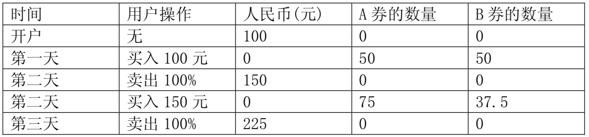

【样例说明】

【评分方法】
本题没有部分分，你的程序的输出只有和标准答案相差不超过0.001时，才能获得该测试点的满分，否则不得分。
【数据规模和约定】
测试数据设计使得精度误差不会超过 $10^{-7}$。
对于 $40\%$ 的测试数据，满足 $N ≤ 10$；
对于 $60\%$ 的测试数据，满足 $N ≤ 1 000$；
对于 $100\%$ 的测试数据，满足 $N ≤ 100 000$；
对于 $100\%$ 的测试数据，满足：$0 < A_K≤ 10$；$0 < B_K≤ 10$；$0 < Rate_K≤ 100$；$MaxProfit ≤ 10^9$。
【提示】
输入文件可能很大，请采用快速的读入方式。
必然存在一种最优的买卖方案满足：
- 每次买进操作使用完所有的人民币;
- 每次卖出操作卖出所有的金券。
 Comet OJ
Comet OJ